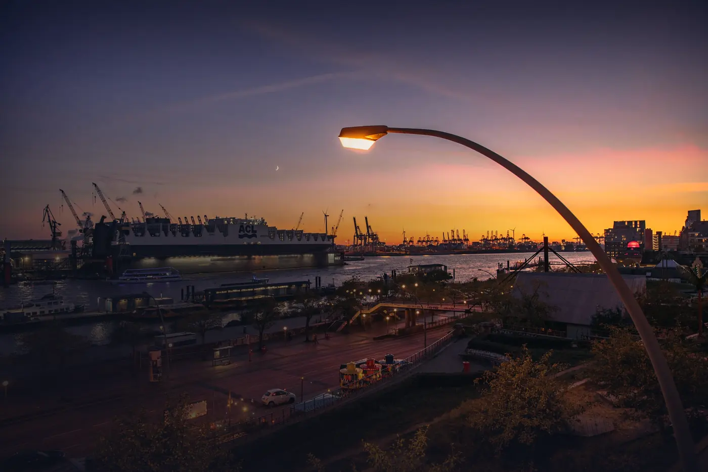
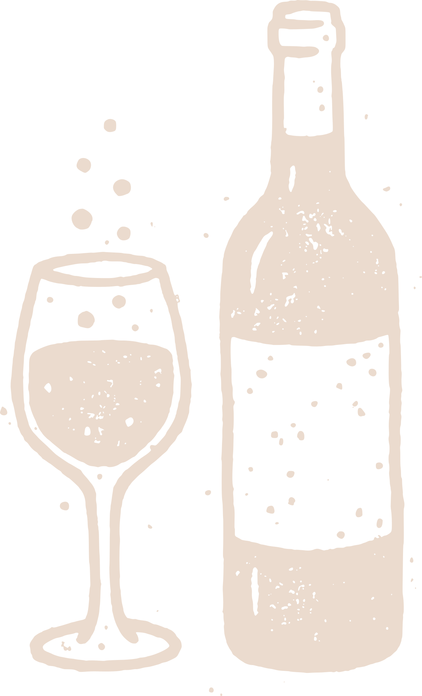
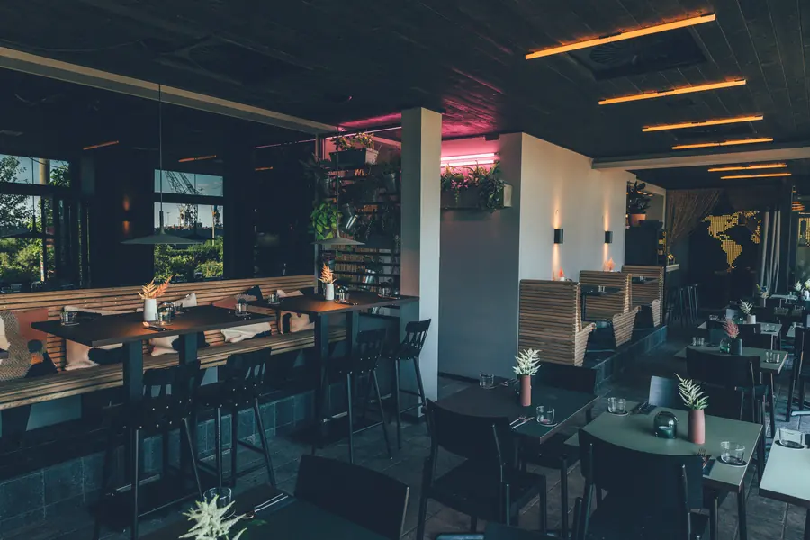
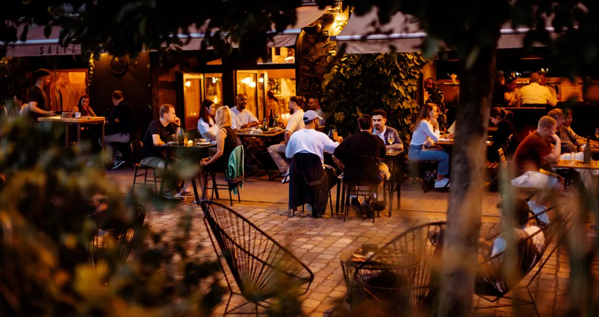

DE / ENSt. Pauli Hafenstraße 136 – 140, HamburgZum Böhler Strand, Sankt Peter-Ording

Taste aroundthe world.
Taste aroundthe world.
Taste aroundthe world.
Three restaurants between the harbour's edge and the North Sea. We cook with fire, with ingredients from the region and with everything we brought back from our travels.
In 2014 we, Cozy & Jo, quit our jobs to explore the world and pursue our favourite things: travelling, surfing, cooking.
Since then this path has taken us to special places all over the planet, always in search of inspiring stories, good waves and special flavours. We express our experiences in cookbooks, documentaries and our own culinary vision, which has found a home in the three Salt & Silver restaurants in Hamburg and Sankt Peter-Ording.
We have been cooking in Hamburg since 2017, and since 2022 also on the North Sea in Sankt Peter-Ording.


InsideFor sharingBy the fireMore than 120 wines

Hafenstraße 136
01/ 03
Salt & SilverRestaurant
Wanderlust cuisine & wine
À la carte and for sharing. Head chef Laura Kierse and founder Jo cook a changing menu with regional ingredients, fresh fish and game from Jagdgut Damp. The wine list has more than 120 entries.
Eight metres above the sandFrom the fireFrom the salt marshesOn the plateBöhler Strand
03/ 03
Salt & Silverliving by the
Fish grill & beach bar
A stilt house in the middle of the sand, eight metres above the beach. Beef and lamb from the salt marshes, mussels and oysters from the North Sea, fish from the open fire.
InsideFor sharingBy the fireMore than 120 winesHafenstraße 136
The roomTacosCrudoThe table is setHafenstraße 140
Eight metres above the sandFrom the fireFrom the salt marshesOn the plateBöhler Strand
Distances from Hamburg as printed on our menu
From farto table.
Since 2014 we have been collecting techniques, ingredients and ideas all over the world. In Hamburg they come together with local ingredients from sustainable sources and our own fields: locally rooted, globally inspired.
From the menuHamburg
French OysterKiwi, Kosho
6 / pcs
Crudo from Stone BassTomato-Caramel, Fig, Sesame-Sambal